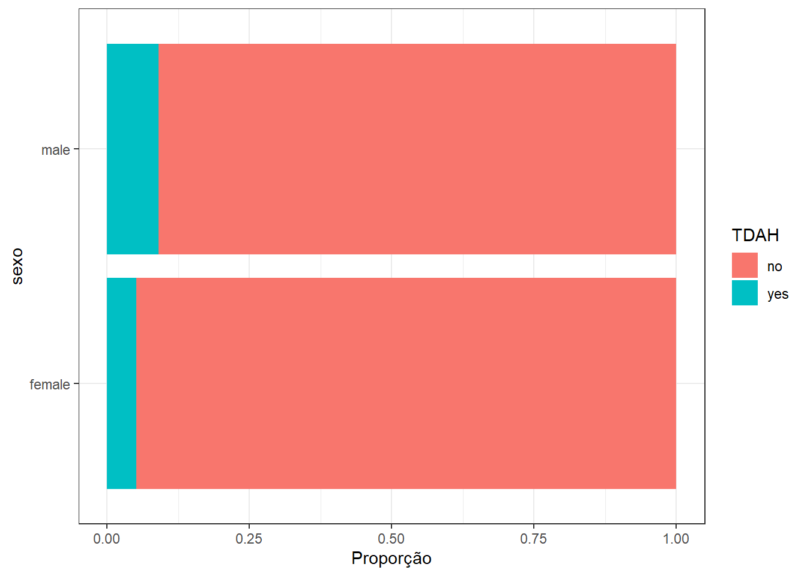

Capítulo 9 Qui quadrado
Objetivos do capítulo
1. Introduzir o Qui quadrado
2. Realizar gráficos relacionados
2. Apresentar os pressupostos do teste
3. Apresentar e interpretar métricas de tamanho do efeito
5. Dar exemplos relacionados à escrita dos resultados
O Teste Qui-quadrado é um conjunto de, ao menos, três testes estatísticos desenvolvidos para análise de variáveis categóricas e que permitem testar a homogeneidade da distribuição de uma variável (Homogeneity), sua aderência (Goodness of fit) ou a indepedência entre duas variáveis. Como todos os testes não-paramétricos, ele é livre de uma distribuição de probabilidade característica e a mecânica matemática é similar entre esses três tipos de qui-quadrado:
\[\chi^2=\sum_{k=1}^{n} \frac{(O_k - E_k)^2}{E_k}\]
9.1 Pesquisa
Base: Base R TDAH Arruda.Rdata
Neste capítulo, vamos utilizar a pesquisa intitulada “Parent-reported diagnosis of Attention Deficit Hyperactivity Disorder and psychostimulant use among children and adolescents: a population-based nationwide study”, que está em avaliação pela revista “Social Psychiatry and Psychiatric Epidemiology (SPPE)”. Neste trabalho, tivemos o objetivo de verificar aspectos epidemiológicos do Transtorno do Déficit de Atenção com Hiperatividade (TDAH) em uma amostra representativa de crianças e adolescentes brasileiros, bem como explorar eventuais associações entre características sociodemográficas, especialmente os sexo do participante, e possíveis fatores e risco e TDAH.
9.2 Execução no R
Como exposto no decorrer de outros capítulos, o teste de hipóteses começa pela formulação conceitual das hipóteses. Apesar de ser possível estipular \(H_0\) e \(H_a\) a partir de equações específicas,a apresentação será textual/substantiva.
\[H_0 = Não\ há\ associação\ entre\ sexo\ e\ TDAH \\ H_a = Há\ associação\ entre\ sexo\ e\ TDAH \\ \alpha = 0.05\] Uma característica colateral a esta apresentação textual do teste de hipóteses do Qui-quadrado é evitar confusões que ocorrem em relação ao conceito do teste e sua formulação matemática. Com muita frequência, dividimos os testes de hipóteses naqueles que verificam “associação” e naqueles que verificam “diferenças”. Conceitualmente, o Qui-quadrado investiga associação entre variáveis. No entanto, sua formulação matemática é feita pela diferença entre um valor observado e um valor esperado (tal como ilustrado na equação ao início do capítulo). ASsim, acredito que a formulação apenas textual evita criar confusões e ainda tornar o conteúdo mais palatável.
Posto isso, o gráfico de barras é sempre um bom início para visualizar os dados. Repare que a barra azul (que representa a porcentagem de TDAH) parece se comportar de maneira diferente nos grupos.
ggplot(ds_selected, aes(x= sex_male, fill = adhd_parent)) +
geom_bar(position = "fill") +
coord_flip() +
theme_bw() +
labs(x = "sexo", y = "Proporção", fill = "TDAH")
ds_selected %>%
tabyl(sex_male, adhd_parent) %>%
adorn_totals(c("row", "col")) %>%
adorn_percentages("row") %>%
adorn_pct_formatting(rounding = "half up", digits = 0) %>%
adorn_ns() ## sex_male no yes Total
## female 95% (3379) 5% (183) 100% (3562)
## male 91% (3230) 9% (322) 100% (3552)
## Total 93% (6609) 7% (505) 100% (7114)ds_selected %>% #<-- dataset with predictors
count(adhd_parent) %>%
mutate(prop = prop.table(n)) %>%
adorn_totals() %>%
kable(digits = 2) %>% kable_styling(bootstrap_options = c("striped", "hover", "condensed"))| adhd_parent | n | prop |
|---|---|---|
| no | 6609 | 0.93 |
| yes | 505 | 0.07 |
| Total | 7114 | 1.00 |
Relação entre sexo (meninos e meninas) e apresentar TDAH (sim ou não)
ds_selected %>% #Relative Risk for gender
#drop_na() %>%
{CrossTable(.$sex_male,.$adhd_parent,
expected = T,
chisq = T)}## Cell Contents
## |-------------------------|
## | N |
## | Expected N |
## | Chi-square contribution |
## | N / Row Total |
## | N / Col Total |
## | N / Table Total |
## |-------------------------|
##
## =====================================
## .$adhd_parent
## .$sex_male no yes Total
## -------------------------------------
## female 3379 183 3562
## 3309.1 252.9
## 1.475 19.298
## 0.949 0.051 0.501
## 0.511 0.362
## 0.475 0.026
## -------------------------------------
## male 3230 322 3552
## 3299.9 252.1
## 1.479 19.353
## 0.909 0.091 0.499
## 0.489 0.638
## 0.454 0.045
## -------------------------------------
## Total 6609 505 7114
## 0.929 0.071
## =====================================
##
## Statistics for All Table Factors
##
## Pearson's Chi-squared test
## ------------------------------------------------------------
## Chi^2 = 41.60464 d.f. = 1 p = 1.12e-10
##
## Pearson's Chi-squared test with Yates' continuity correction
## ------------------------------------------------------------
## Chi^2 = 41.01118 d.f. = 1 p = 1.51e-10Risco
## $data
## Outcome
## Predictor no yes Total
## female 3379 183 3562
## male 3230 322 3552
## Total 6609 505 7114
##
## $measure
## risk ratio with 95% C.I.
## Predictor estimate lower upper
## female 1.000000 NA NA
## male 1.764517 1.480658 2.102793
##
## $p.value
## two-sided
## Predictor midp.exact fisher.exact chi.square
## female NA NA NA
## male 9.128209e-11 1.08562e-10 1.117279e-10
##
## $correction
## [1] FALSE
##
## attr(,"method")
## [1] "Unconditional MLE & normal approximation (Wald) CI"## $data
## Outcome
## Predictor no yes Total
## female 3379 183 3562
## male 3230 322 3552
## Total 6609 505 7114
##
## $measure
## odds ratio with 95% C.I.
## Predictor estimate lower upper
## female 1.000000 NA NA
## male 1.840732 1.525648 2.220887
##
## $p.value
## two-sided
## Predictor midp.exact fisher.exact chi.square
## female NA NA NA
## male 9.128209e-11 1.08562e-10 1.117279e-10
##
## $correction
## [1] FALSE
##
## attr(,"method")
## [1] "Unconditional MLE & normal approximation (Wald) CI"Chartier, Sylvain, and Andrew Faulkner. 2008. “General Linear Models: An Integrated Approach to Statistics.” Tutorials in Quantitative Methods for Psychology 4 (2): 65–78. https://doi.org/10.20982/tqmp.04.2.p065.
Field, Andy P., and Rand R. Wilcox. 2017. “Robust Statistical Methods: A Primer for Clinical Psychology and Experimental Psychopathology Researchers.” Behaviour Research and Therapy 98 (November): 19–38. https://doi.org/10.1016/j.brat.2017.05.013.
Howell, David C. 2011. Fundamental Statistics for the Behavioral Sciences. Belmont: CA: Wadsworth Cengage Learning.
Lumley, Thomas, Paula Diehr, Scott Emerson, and Lu Chen. 2002. “The Importance of the Normality Assumption in Large Public Health Data Sets.” Annual Review of Public Health 23 (1): 151–69. https://doi.org/10.1146/annurev.publhealth.23.100901.140546.
Morettin, Pedro Alberto, and Wilton de Oliveira Bussab. 2010. Estatistica Basica. Saraiva.